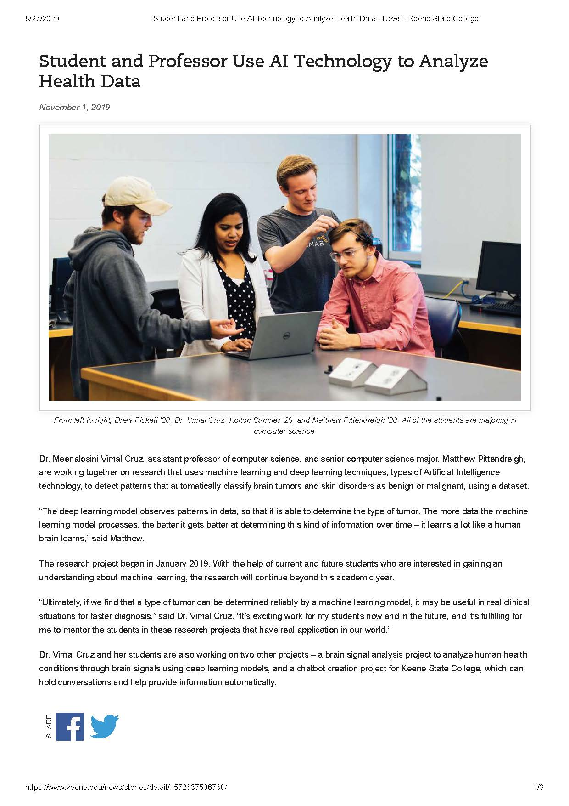
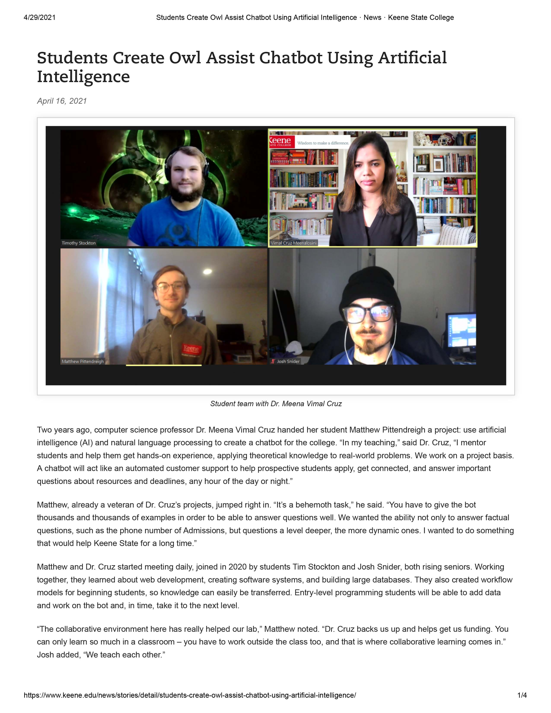
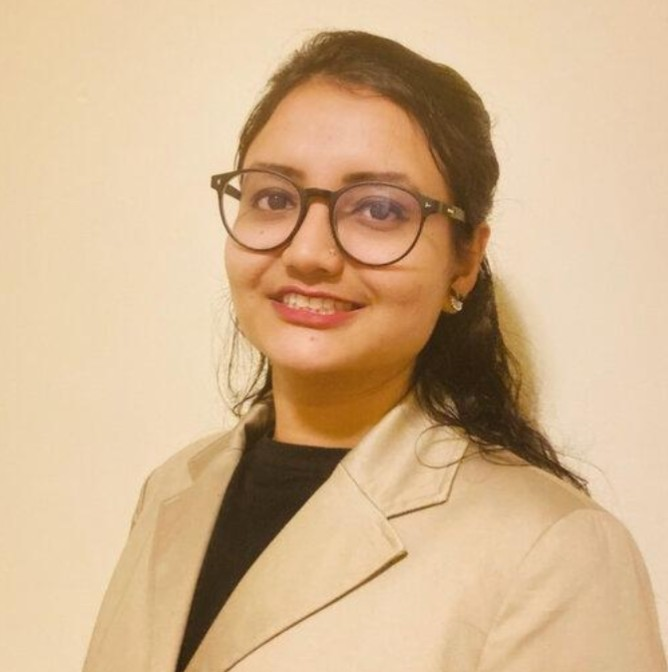
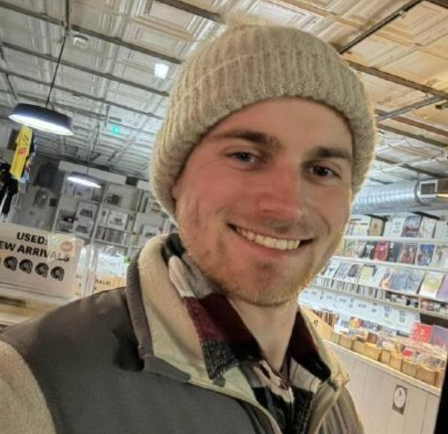
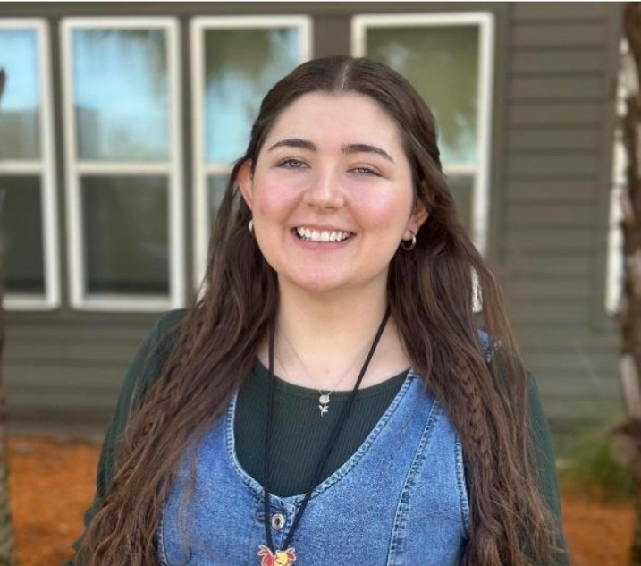
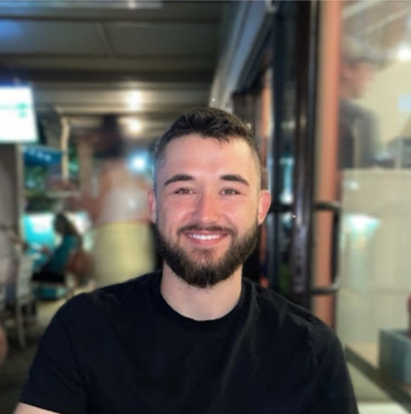

Research
Ocular Disease & Retinal AI
Comprehensive analysis of representation learning for retinal imaging. Development of a hybrid architecture that trains specialist backbones prior to architectural fusion, surpassing current baseline SOTA models.
- Representation Learning in Retinal Image Signal Analysis
- Demographic Adaptability and Privacy via Federated Learning & LLMs
Integrative Oncology
Modeling survival and progression based on metabolic biomarker data (CRP, LDH, Ferritin) and integrating stress/QOL data into prognostic AI frameworks using ML-based survival modeling.
- Cancer Prognostics via Metabolic Biomarkers
- Psychological & Quality of Life Factor Integration
Neurodevelopmental Informatics
Synthesizing EEG signatures (U-shaped spectral profile in ASD, TBR in ADHD) and multimodal emotion recognition via EEG and facial expressions for affective computing.
- Neurophysiological EEG Signatures in ASD and ADHD
- Multimodal Emotion Recognition Pipeline Design
- Impact of Mindfulness on Brain Signals
- Brain Attention Pattern Analysis
- Deep Learning-Based Auditory Word Decoding from Brain Signals
Wearable & Multimodal Health Sensing
Developing low-cost, noninvasive multimodal sensor prototypes that integrate embedded hardware with AI-driven analytics for continuous real-time health monitoring outside clinical settings.
- Bio-Sense: Multimodal Prototype for Health Abnormality Detection
- ECG, PPG/SpO2, GSR, Temperature & IMU Sensor Fusion
- CNN-based Stress Detection from Physiological Biosignals
- Arrhythmia Screening via Extra Trees Classifier
- Apnea & Fall-Risk Detection from Segmented Signal Windows
- End-to-End Pipeline: Acquisition → Preprocessing → Inference → Visualization
Healthcare Analytics
Applying predictive analytics and machine learning to structured and unstructured healthcare data to support diagnosis, secure records management, and clinical decision-making.
- Computer-Aided Diagnosis for Mammogram-Based Cancer Screening
- Secure Multi-Keyword Searchable Encryption for Health Records
- AI-Based Remote Health Monitoring Systems (AIRHMS)
Machine Vision
Designing deep learning and capsule network architectures for robust image classification, segmentation, and object detection across medical and industrial imaging domains.
- Capsule Networks for Skin Cancer Classification
- Neutrosophic Fuzzy C-Means for MRI Brain Tumor Segmentation
- Machine Vision for Warehouse Operations & Industrial Automation
List of Grants Awarded
| Grant Name | Funding Source | Project Title |
|---|---|---|
| Industry Grant | Georgia Southern University Research and Svc Foundation Inc | Warehouse Operations Machine Vision Applications |
| ALG Transformative Grant | ALG | Python Course Development |
| Georgia Southern University | Undergraduate Research Assistant Funding (Internal) | Research scholar recruitment to work in BCI research projects |
| Georgia Southern University | Undergraduate Research Assistant Funding (Internal) | Research scholar recruitment to work in BCI research projects |
| Georgia Southern University | Faculty Research Seed Grant (Internal) | Attention Pattern Analysis using Brain-Computer Interface Technology. |
| Georgia Southern University | Faculty Research Seed Grant (Internal) | In situ Monitoring and Material Characterization of Wire Arc Additive Manufacturing Components using Acoustic Emission |
| NH-INBRE Pilot | NIH | Development of Artificial Intelligence based Remote Health Monitoring System (AIRHMS) |
| NH-INBRE SEED | NIH IDeA /NH-INBRE | Development of Artificial Intelligence based Remote Health Monitoring System (AIRHMS) |
| NH-INBRE SEED | NIH IDeA /NH-INBRE | Computer-Aided Diagnosis of Brain tumor through MRI images using advanced Deep Learning and Image Processing techniques. |
| NH-INBRE SEED | NIH IDeA /NH-INBRE | Brain-Computer Interface Assisted Healthcare System design and MRI Brain Image analysis using Deep Learning Techniques |
| Faculty Development Grant | Keene state college | Deep Learning model for brain stroke classification from MRI images |
| Faculty Development Grant | Keene state college | An Efficient Retrieval of Health Records using Multi Keyword Searchable Attribute Based Encryption in Cloud |
| Student research stipend award | SSH, Keene state college | Chatbot creation for KSC using natural language processing and deep learning models |
| Student research stipend award | SSH, Keene state college | Deep Learning Models in MRI Brain Image Analysis |
| PEPSICO grant | Pepsi & Keene state college | Project-based learning on programming for CS club and STEM outreach programs |
| Virtual Innovation grant | Keene state college | Chatbot – Virtual assistant for KSC |
No grants match your filter.

Click here to access the original article →
Owl Assist – Chatbot for Keene State College
Abstract
Owl Assist is a chatbot designed to answer questions about Keene State College and assist its faculty and students. Chatbots programmed can act as a multifaceted asset to any university. Their primary function is as a centralized application for acquiring information. They can assist students to enroll in the university, engage in college events, and recall important deadlines. Secondarily they serve as an advertisement, representing the school's ability and motivation to adapt to technological innovation. Given that the system can both encourage students to apply and assist them in completing the registration process, chatbots can lower the number of students that are accepted to, but do not actually attend Keene State due to registration complications, a concept known as summer melt. For this reason, chatbots are an investment that should be considered by many US schools.

Automated Method for Quantifying Planarian Pigmentation
Abstract
Porphyrias are a group of inherited metabolic disorders that affect an estimated 1 in 10,000 people. These disorders cause symptoms including sunlight-induced skin damage and neuropsychiatric issues ranging from mild confusion to seizures or paralysis. In research conducted by the Pellettieri lab at Keene State, a link has been found between porphyrias and a species of flatworm named Planaria. When planaria are exposed to light, the same molecules that cause light sensitivity in porphyria patients cause depigmentation in the worms. Image processing is used in biological research due to its role in converting experimental images into relative quantitative measurements. An automated process also provides the benefits of efficiency, replicability, and an unbiased quantification. In our research, we aim to accurately quantify the pigment of planaria in efforts to determine statistical significance of results found in biological research.
Skin Cancer Diagnosis
Abstract
In recent decades, there have been numerous investigations concentrated on early detection of skin cancer using non-invasive strategies in lieu of conventional excisional biopsy. The early, fast and effective detection of skin cancer is crucial, as it makes treatment easier and increasingly successful. Researchers are proficient in preprocessing skin images but fail in identifying efficient classifiers for classifying the skin cancer due to the complex variety of lesion sizes, colors, and shapes. No single classifier is sufficient for classifying the skin cancer. Recently, Convolutional Neural Networks (CNNs) have played an important role in deep learning. Classification using CNN's have proven successful in various fields. However, CNNs suffer from not taking important spatial relations between features into consideration. Also, they lack rotational invariance. The CNNs classify only if certain features are present in the test data, ignoring their relative spatial relation with each other, resulting in false positives. The lack of rotational invariance assigns an object to other classes, leading to false negatives. The Capsule Network (CapsNet) is designed to overcome the problems associated with CNNs. Capsule Networks use modules or capsules other than pooling as an alternative to translational invariance. The Capsule Network uses layer-based squashing and dynamic routing. The Capsule Network uses vector-output capsules and max-pooling with routing by agreement, unlike scale-output feature detectors of CNNs. These assist in avoiding false positives and false negatives. The Capsule Network architecture is created with many convolution layers and one capsule layer as the final layer. Hence, in the proposed work, skin cancer classification is performed based on CapsNet architecture which can work well with high dimensional hyperspectral images of skin.
MRI Brain Tumor Analysis
Abstract
Medical image segmentation plays a vital role in early detection and diagnosing the disease. Recent days, many researchers are working on enhancing the result of segmentation, which are crucial for treatment planning. Segmenting of brain images is challenging due to the presence of noise and intensity in-homogeneity that creates uncertainty in segmenting the tissues. Neutrosophic sets are efficient tools to address these uncertainties present in the images. In this paper, a novel single valued triangular neutrosophic fuzzy c-means algorithm is proposed to segment the magnetic resonance brain images that can effectively model the uncertainty with truth, falsity and indeterminacy regions. The experimental results reveal that the proposed work outperforms the other relevant methods.
Research Team



